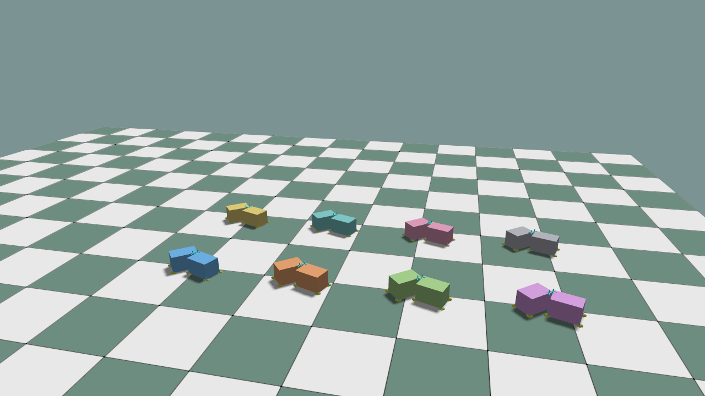

Contact Sensors¶
Contact sensors attach to a rigid or articulation simulation view. The current GPU sensor reports contact count, contact mask, and accumulated normal impulse.
rigids = world.get_rigid_batch(obj_id=0)
contact = rigids.add_contact_sensor(body_ids=[0], name="contact")
force = rigids.add_force_sensor(body_ids=[0], name="force")
world.step()
counts = contact.contact_count
in_contact = contact.in_contact
impulse = contact.net_impulse
average_normal_force = force.force
ForceSensor.force is net_impulse / world.sim_dt. It is not a full six-axis
wrench: tangential friction impulse and contact torque are not present.
The high-level GPU example keeps all sensor outputs as Torch CUDA tensors:
python ./python/examples/sim_gpu_contact_sensor.py --num-envs 8
python ./python/examples/sim_gpu_contact_sensor.py --num-envs 8 --viewer
The second command requires Linux/NVIDIA CUDA/OpenGL interop.
Complete source: sim_gpu_contact_sensor.py
1"""High-level PhysX GPU rigid batch with CUDA contact/force sensors.
2
3This example keeps the public path small:
4
5- create a batched ``KangSimWorld`` on CUDA,
6- spawn two rigid views across many environments,
7- attach ``ContactSensor`` and ``ForceSensor`` to the views,
8- read the sensor outputs as Torch CUDA tensors,
9- optionally draw both rigid batches through GPU ExternalBuffer visuals.
10"""
11
12from __future__ import annotations
13
14import argparse
15from pathlib import Path
16
17import kangengine as ke
18import numpy as np
19import torch
20from kangengine import imgui, keys
21
22
23LEFT_OBJ_ID = 0
24RIGHT_OBJ_ID = 1
25
26
27def asset_path(*parts: str) -> str:
28 return str(Path(ke.__file__).resolve().parent / "assets" / Path(*parts))
29
30
31def make_env_origins(num_envs: int, device) -> torch.Tensor:
32 env_ids = torch.arange(num_envs, dtype=torch.float32, device=device)
33 columns = min(4, max(1, num_envs))
34 x = torch.remainder(env_ids, float(columns)) * 1.6
35 y = torch.div(env_ids, columns, rounding_mode="floor") * 1.8
36 return torch.stack((x, y, torch.zeros_like(x)), dim=1)
37
38
39def make_identity_quaternions(count: int, device) -> torch.Tensor:
40 rotations = torch.zeros((count, 4), dtype=torch.float32, device=device)
41 rotations[:, 3] = 1.0
42 return rotations
43
44
45def env_group_colors(num_envs: int):
46 palette = (
47 (0.18, 0.52, 0.92, 1.0),
48 (0.92, 0.42, 0.18, 1.0),
49 (0.42, 0.72, 0.28, 1.0),
50 (0.74, 0.36, 0.82, 1.0),
51 (0.88, 0.72, 0.22, 1.0),
52 (0.25, 0.68, 0.68, 1.0),
53 (0.86, 0.38, 0.58, 1.0),
54 (0.52, 0.52, 0.58, 1.0),
55 )
56 colors = []
57 for env_id in range(num_envs):
58 colors.append(list(palette[env_id % len(palette)]))
59 return colors
60
61
62def contact_asset(args) -> str:
63 filename = "ball.xml" if args.shape == "sphere" else "box.xml"
64 return asset_path("objects", filename)
65
66
67def initial_x_offset(args) -> float:
68 # ball.xml radius is 0.12, box.xml x half-extent is 0.18.
69 return 0.135 if args.shape == "sphere" else 0.205
70
71
72class GpuContactSensorDemo:
73 def __init__(self, args):
74 self.args = args
75 self.device = torch.device(f"cuda:{args.cuda_device}")
76 self.world = None
77 self.peak_impulse = 0.0
78 self.peak_force = 0.0
79
80 def setup(self):
81 args = self.args
82 physics_config = ke.physics.PhysicsConfig.z_up()
83 physics_config.enable_contact_reports = False # Turn off CPU contact report callback
84 physics_config.restitution = 0.3
85 self.world = ke.sim.KangSimWorld(
86 num_envs=args.num_envs,
87 physics_config=physics_config,
88 sim_device=self.device,
89 sim_dt=1.0 / 120.0,
90 add_ground=True,
91 )
92 rigid_xml = contact_asset(args)
93 rigid_data = self.world.load_mjcf(rigid_xml)
94
95 for env_id in range(args.num_envs):
96 self.world.add_rigid(
97 rigid_data,
98 env_id=env_id,
99 obj_id=LEFT_OBJ_ID,
100 name=f"left_{args.shape}",
101 density=200.0,
102 )
103 self.world.add_rigid(
104 rigid_data,
105 env_id=env_id,
106 obj_id=RIGHT_OBJ_ID,
107 name=f"right_{args.shape}",
108 density=200.0,
109 )
110
111 self.left = self.world.get_rigid_batch(obj_id=LEFT_OBJ_ID)
112 self.right = self.world.get_rigid_batch(obj_id=RIGHT_OBJ_ID)
113 self.left_contact = self.left.add_contact_sensor(
114 body_ids=[0], name="left_contact"
115 )
116 self.left_force = self.left.add_force_sensor(body_ids=[0], name="left_force")
117 self.right_contact = self.right.add_contact_sensor(
118 body_ids=[0], name="right_contact"
119 )
120
121 self._build_reset_tensors()
122 self.world.init_gpu_system(cuda_device_id=args.cuda_device)
123 self.reset()
124 return self
125
126 def _build_reset_tensors(self):
127 args = self.args
128 origins = make_env_origins(args.num_envs, self.device)
129 self.rotations = make_identity_quaternions(args.num_envs, self.device)
130 self.zeros3 = torch.zeros((args.num_envs, 3), dtype=torch.float32, device=self.device)
131
132 offset = initial_x_offset(self.args)
133 self.left_pos = origins + torch.tensor(
134 [-offset, 0.0, 1.0], dtype=torch.float32, device=self.device
135 )
136 self.right_pos = origins + torch.tensor(
137 [offset, 0.0, 1.0], dtype=torch.float32, device=self.device
138 )
139 self.left_vel = self.zeros3.clone()
140 self.right_vel = self.zeros3.clone()
141 self.left_vel[:, 0] = float(self.args.speed)
142 self.right_vel[:, 0] = -float(self.args.speed)
143
144 def reset(self):
145 self.left.set_root_state(
146 None,
147 self.left_pos,
148 self.rotations,
149 linear_velocity=self.left_vel,
150 angular_velocity=self.zeros3,
151 )
152 self.right.set_root_state(
153 None,
154 self.right_pos,
155 self.rotations,
156 linear_velocity=self.right_vel,
157 angular_velocity=self.zeros3,
158 )
159 self.world.step(substeps=0, refresh=False, apply_commands=False)
160 self.peak_impulse = 0.0
161 self.peak_force = 0.0
162
163 def step(self, substeps: int):
164 self.world.step(substeps=substeps, refresh=False)
165 self._update_peak_metrics()
166 return self.left_contact.data
167
168 def _current_metrics(self):
169 impulse = self.left_contact.net_impulse[:, 0]
170 force = self.left_force.force[:, 0]
171 max_impulse = float(torch.linalg.vector_norm(impulse, dim=1).max().item())
172 max_force = float(torch.linalg.vector_norm(force, dim=1).max().item())
173 return max_impulse, max_force
174
175 def _update_peak_metrics(self):
176 max_impulse, max_force = self._current_metrics()
177 self.peak_impulse = max(self.peak_impulse, max_impulse)
178 self.peak_force = max(self.peak_force, max_force)
179 return max_impulse, max_force
180
181 def report(self, step: int):
182 torch.cuda.synchronize(self.device)
183 counts = self.left_contact.contact_count[:, 0]
184 hit_count = int(torch.count_nonzero(counts).item())
185 max_impulse, max_force = self._current_metrics()
186 print(
187 f"step {step:04d} | contacts={hit_count}/{self.args.num_envs} "
188 f"impulse={max_impulse:.6f} force={max_force:.2f} "
189 f"peak_impulse={self.peak_impulse:.6f} peak_force={self.peak_force:.2f}"
190 )
191
192 def release(self):
193 if self.world is not None:
194 self.world.release()
195 self.world = None
196
197
198def run_headless(args):
199 demo = GpuContactSensorDemo(args).setup()
200 try:
201 print("KangSimWorld high-level GPU contact sensor example")
202 print(f" envs : {args.num_envs}")
203 print(f" device : cuda:{args.cuda_device}")
204 print(" tensors : ContactSensor/ForceSensor outputs stay on CUDA")
205 for step in range(args.steps):
206 if args.reset_every and step and step % args.reset_every == 0:
207 demo.reset()
208 demo.report(step)
209 continue
210 demo.step(args.substeps)
211 if step % args.report_every == 0 or step == args.steps - 1:
212 demo.report(step)
213 finally:
214 demo.release()
215
216
217class GpuContactSensorViewer(ke.App):
218 def __init__(self, args):
219 super().__init__()
220 self.args = args
221
222 def setup(self):
223 self._skip_fixed_updates_this_frame = False
224 self.show_contact_debug = True
225 self.contact_marker_view = None
226 self.force_arrow_view = None
227 self.demo = GpuContactSensorDemo(self.args).setup()
228 self.timing = self.configure_timing(
229 ke.SimulationTimingConfig.from_dt(
230 physics_dt=self.demo.world.sim_dt,
231 fixed_dt=self.demo.world.sim_dt * self.args.substeps,
232 render_hz=60.0,
233 )
234 )
235 self.set_simulation_hotkeys_enabled(True)
236 self.shaders = self.create_standard_shaders()
237 self.add_ground(scale=16.0, shader=self.shaders.ground)
238 self.set_camera_view([3.5, -5.5, 3.4], [2.0, 1.2, 0.8])
239
240 self.visual = ke.visual.sim.SimWorldVisualizer(self, self.demo.world)
241 rigid_xml = contact_asset(self.args)
242 group_colors = env_group_colors(self.args.num_envs)
243 self.visual.add(
244 self.demo.left,
245 rigid_xml,
246 prim_base_path="/gpu_contact/left",
247 shader=self.shaders.common,
248 color=group_colors,
249 )
250 self.visual.add(
251 self.demo.right,
252 rigid_xml,
253 prim_base_path="/gpu_contact/right",
254 shader=self.shaders.common,
255 color=group_colors,
256 )
257 self.check_error()
258
259 def preUpdate(self):
260 if self.was_key_pressed(keys.C):
261 self.show_contact_debug = not self.show_contact_debug
262 if self.was_key_pressed(keys.R):
263 self.demo.reset()
264 self._skip_fixed_updates_this_frame = True
265
266 def fixedUpdate(self, fixed_dt):
267 if not self._skip_fixed_updates_this_frame:
268 self.demo.step(self.args.substeps)
269
270 def preRender(self):
271 self.visual.sync()
272 self._update_contact_debug()
273 self._skip_fixed_updates_this_frame = False
274 self.check_error()
275
276 def _clear_contact_debug(self):
277 empty3 = np.zeros((0, 3), dtype=np.float32)
278 empty4 = np.zeros((0, 4), dtype=np.float32)
279 if self.contact_marker_view is not None:
280 self.contact_marker_view.update_lines(empty3, empty3, empty4)
281 if self.force_arrow_view is not None:
282 self.force_arrow_view.update_arrows(empty3, empty3, empty4)
283
284 def _update_contact_debug(self):
285 if not self.show_contact_debug:
286 self._clear_contact_debug()
287 return
288
289 points = self._contact_points_cpu()
290 if points.size == 0:
291 self._clear_contact_debug()
292 return
293 # 0:3 = contact position xyz
294 # 3:6 = contact normal xyz
295 # 6:9 = normal impulse vector xyz
296 # 9 = separation
297 positions = points[:, 0:3]
298 impulses = points[:, 6:9]
299 self._update_contact_markers(positions)
300 self._update_force_arrows(positions, impulses)
301
302 def _contact_points_cpu(self):
303 gpu_system = self.demo.world.gpu_system
304 count_tensor = torch.as_tensor(
305 gpu_system.contact_point_count(), device=self.demo.device
306 )
307 count = int(count_tensor[0].item())
308 if count <= 0:
309 return np.zeros((0, 10), dtype=np.float32)
310 points = torch.as_tensor(gpu_system.contact_points(), device=self.demo.device)
311 count = min(count, int(points.shape[0]), int(self.args.max_debug_contacts))
312 return points[:count].cpu().numpy().astype(np.float32, copy=False)
313
314 def _update_contact_markers(self, positions):
315 half = float(self.args.contact_marker_size) * 0.5
316 offsets = np.array(
317 (
318 (half, 0.0, 0.0),
319 (0.0, half, 0.0),
320 (0.0, 0.0, half),
321 ),
322 dtype=np.float32,
323 )
324 starts = []
325 ends = []
326 for pos in positions:
327 for offset in offsets:
328 starts.append(pos - offset)
329 ends.append(pos + offset)
330 starts = np.asarray(starts, dtype=np.float32)
331 ends = np.asarray(ends, dtype=np.float32)
332 colors = np.repeat(
333 np.array([[0.05, 0.95, 1.0, 1.0]], dtype=np.float32),
334 starts.shape[0],
335 axis=0,
336 )
337 if self.contact_marker_view is None:
338 self.contact_marker_view = self.scene.log_lines(
339 "/debug/gpu_contact_points",
340 self.shaders.common,
341 starts,
342 ends,
343 colors,
344 0.006,
345 8,
346 )
347 else:
348 self.contact_marker_view.update_lines(starts, ends, colors)
349
350 def _update_force_arrows(self, positions, impulses):
351 dt = max(float(self.demo.world.sim_dt), 1e-8)
352 forces = impulses / dt
353 norms = np.linalg.norm(forces, axis=1)
354 active = norms > float(self.args.force_threshold)
355 if not np.any(active):
356 empty3 = np.zeros((0, 3), dtype=np.float32)
357 empty4 = np.zeros((0, 4), dtype=np.float32)
358 if self.force_arrow_view is not None:
359 self.force_arrow_view.update_arrows(empty3, empty3, empty4)
360 return
361
362 starts = positions[active].astype(np.float32, copy=False)
363 ends = (
364 starts + forces[active] * float(self.args.force_arrow_scale)
365 ).astype(np.float32, copy=False)
366 colors = np.repeat(
367 np.array([[1.0, 0.86, 0.05, 1.0]], dtype=np.float32),
368 starts.shape[0],
369 axis=0,
370 )
371 if self.force_arrow_view is None:
372 self.force_arrow_view = self.scene.log_arrows(
373 "/debug/gpu_contact_forces",
374 self.shaders.common,
375 starts,
376 ends,
377 colors,
378 0.018,
379 12,
380 )
381 else:
382 self.force_arrow_view.update_arrows(starts, ends, colors)
383
384 def render(self):
385 counts = self.demo.left_contact.contact_count[:, 0]
386 force = self.demo.left_force.force[:, 0]
387 hit_count = int(torch.count_nonzero(counts).item())
388 max_force = float(torch.linalg.vector_norm(force, dim=1).max().item())
389
390 imgui.begin("GPU Contact Sensor")
391 state = "paused" if self.is_simulation_paused() else "running"
392 imgui.text(f"State: {state}")
393 imgui.text(f"Envs: {self.args.num_envs}")
394 imgui.text(f"Contacts: {hit_count}/{self.args.num_envs}")
395 imgui.text(f"Max normal force: {max_force:.2f}")
396 imgui.text(f"Peak normal force: {self.demo.peak_force:.2f}")
397 imgui.text(f"Contact debug: {'on' if self.show_contact_debug else 'off'}")
398 imgui.separator()
399 imgui.text(
400 "Enter: play/pause Space: pause/step "
401 "R: reset C: contact debug"
402 )
403 imgui.end()
404
405 def cleanup(self):
406 if hasattr(self, "visual"):
407 self.visual.release()
408 if hasattr(self, "demo"):
409 self.demo.release()
410
411
412def parse_args():
413 parser = argparse.ArgumentParser(description=__doc__)
414 parser.add_argument("--num-envs", type=int, default=8)
415 parser.add_argument("--steps", type=int, default=180)
416 parser.add_argument("--substeps", type=int, default=1)
417 parser.add_argument("--report-every", type=int, default=30)
418 parser.add_argument("--reset-every", type=int, default=0)
419 parser.add_argument("--shape", choices=("box", "sphere"), default="box")
420 parser.add_argument("--speed", type=float, default=1.5)
421 parser.add_argument("--max-debug-contacts", type=int, default=128)
422 parser.add_argument("--contact-marker-size", type=float, default=0.08)
423 parser.add_argument("--force-arrow-scale", type=float, default=0.001)
424 parser.add_argument("--force-threshold", type=float, default=1e-4)
425 parser.add_argument("--cuda-device", type=int, default=0)
426 parser.add_argument("--viewer", action="store_true")
427 parser.add_argument("--width", type=int, default=1280)
428 parser.add_argument("--height", type=int, default=720)
429 args = parser.parse_args()
430
431 if args.num_envs < 1:
432 parser.error("--num-envs must be positive")
433 if args.steps < 1:
434 parser.error("--steps must be positive")
435 if args.substeps < 1:
436 parser.error("--substeps must be positive")
437 if args.report_every < 1:
438 parser.error("--report-every must be positive")
439 if args.reset_every < 0:
440 parser.error("--reset-every must be non-negative")
441 if args.speed <= 0.0:
442 parser.error("--speed must be positive")
443 if args.max_debug_contacts < 1:
444 parser.error("--max-debug-contacts must be positive")
445 if args.contact_marker_size <= 0.0:
446 parser.error("--contact-marker-size must be positive")
447 if args.force_arrow_scale < 0.0:
448 parser.error("--force-arrow-scale must be non-negative")
449 if args.force_threshold < 0.0:
450 parser.error("--force-threshold must be non-negative")
451 return args
452
453
454def main():
455 args = parse_args()
456 if args.viewer:
457 app = GpuContactSensorViewer(args)
458 app.initialize(args.width, args.height, False, ke.UpAxis.Z)
459 app.start()
460 else:
461 run_headless(args)
462
463
464if __name__ == "__main__":
465 main()
